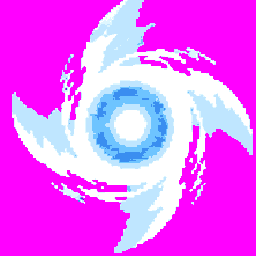
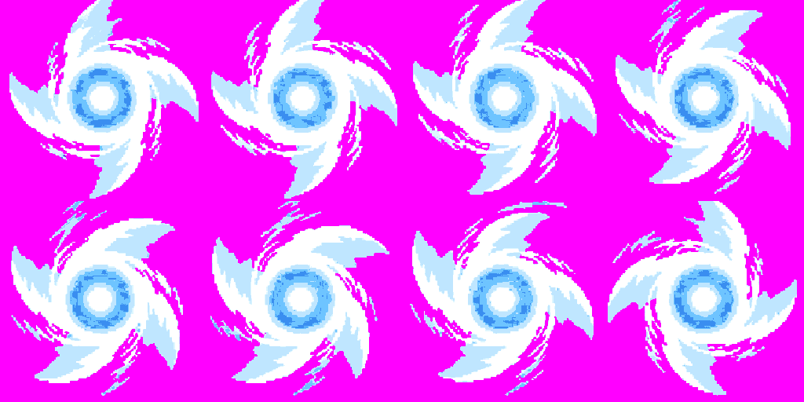
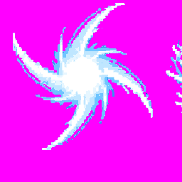
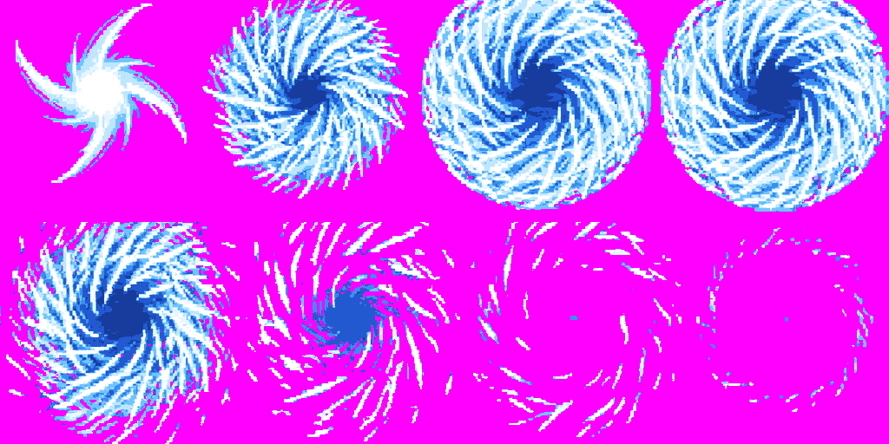

Rasenshuriken effects, source review for A4 and A5. The user approved both drawings via Claude relay skills #10. The effects are not packed into the game.
Branch: art/naruto-skills · review status: approved by user via Claude relay #10 · technical state: no in-game check
8 frames · 35 ms · looping
Center anchor · 256 px cells · 0.9 fill target
Call budget: 3 of 3 used; selected call 3
Palette: 6 blues/whites plus magenta background


Four curved wind blades orbit a bright white-cyan core and thin ring. The contact sheet preserves frame order, left to right then top to bottom. This is a loop candidate; no character body or hands are included.
8 frames · 50 ms · plays once; frames 2–4 loop
Center anchor · 256 px cells · 0.98 fill target
Approved via Claude relay #10 · 1 of 3 calls used
Palette: 8 blues/whites plus magenta background


The burst opens into a round white-blue blade sphere. Frames 2–4 retain a circular inset silhouette; the game draws the victim in the darker center. It fades to loose shards and a ring.